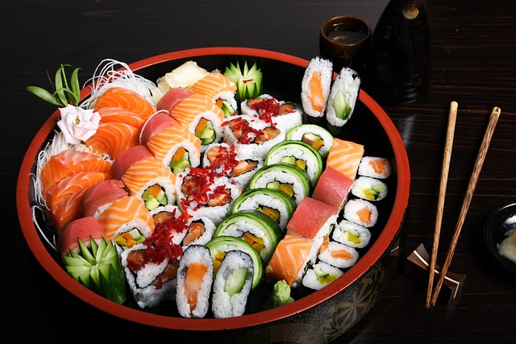
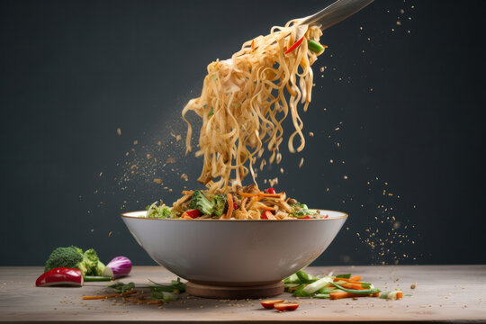
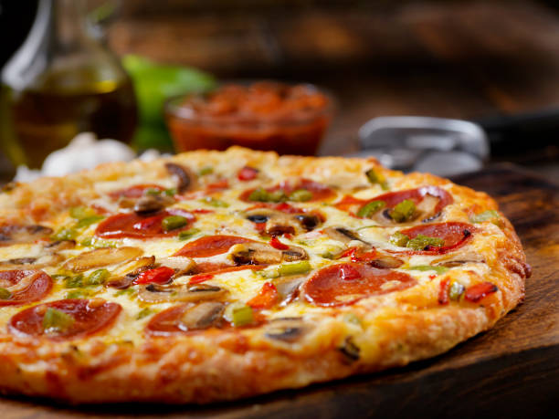
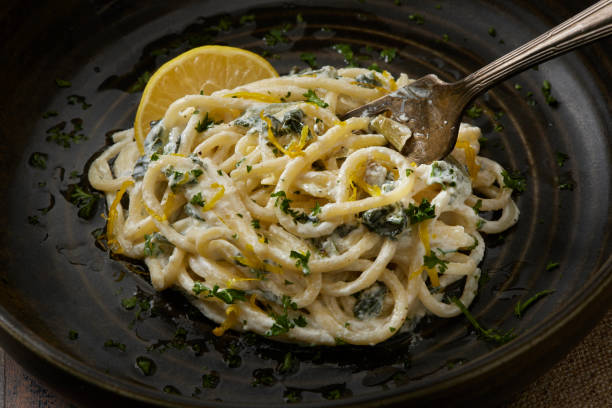

CHINESE FOOD ITEMS
"Some of the best food items for chinese cuisine:"
1. Sushi: Sushi is a traditional Japanese dish centered on vinegared medium-grain rice (shari), typically paired with seafood (often raw), vegetables, or egg. Contrary to popular belief, "sushi" refers to the seasoned rice rather than raw fish, which is known as sashimi. Originating from fermented fish preserved in rice, it evolved into a popular, fast-food meal.

2. Noodles: Authentic Chinese noodles are a diverse, ancient staple with4,000 years of history, primarily divided between wheat-based noodles in the north and rice-based noodles in the south. They are characterized by their texture—ranging from silky to firm and chewy—and are commonly served in broth, stir-fried, or tossed in sauces.

INDIAN FOOD ITEMS
"Few delicious dishes from Indian"
1. Butter Chicken: Indian Butter Chicken, or Murgh Makhani, is a world-renowned, iconic Punjabi dish consisting of grilled chicken (tandoori) simmered in a rich, creamy, tomato-based sauce. Characterized by its smooth texture, vibrant orange-red color, and mild, aromatic flavor, it is often served with naan or basmati rice.

2. Chicken Biryani: Indian Chicken Biryani is a celebrated, aromatic rice dish featuring marinated chicken, long-grain basmati rice, and complex spices like saffron, cooked together using the dum method (steaming over low heat). It originates from South Asia and is popular for its layered flavors, often including yogurt, fried onions (barista), mint, and cilantro.

ITALIAN FOOD ITEMS
"Fab Italian tastes"
1. Italian Pizza: Authentic Italian pizza, particularly the world-renowned Neapolitan style, is a culinary tradition rooted in simplicity, high-quality ingredients, and specific, time-honored techniques. Originating in Naples in the 18th century, it is less about heavy toppings and more about the harmony of dough, tomato, cheese, and oil.

2. Pasta: Authentic Italian pasta is characterized by high-quality durum wheat semolina, bronze-die extrusion for a rough, sauce-gripping texture, and slow-drying methods. It is traditionally served al dente (firm to the bite). Key varieties include dried pasta (pasta secca) from the south and egg pasta (pasta fresca) from the north.
